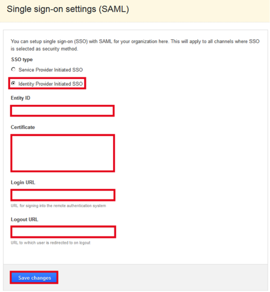
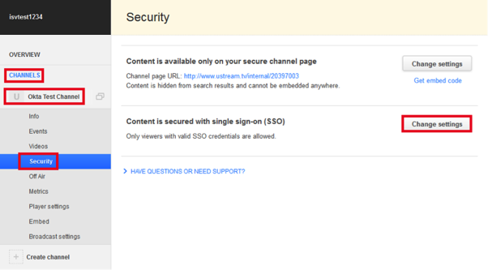
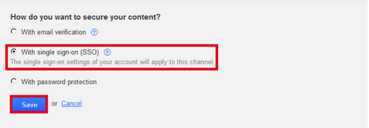
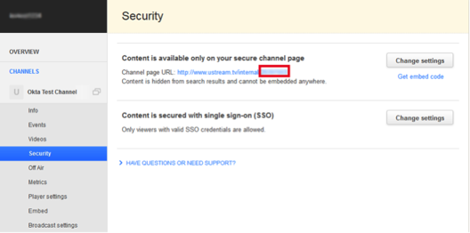
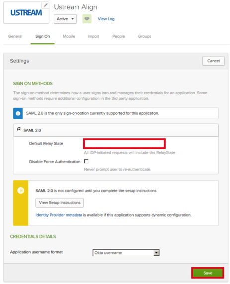
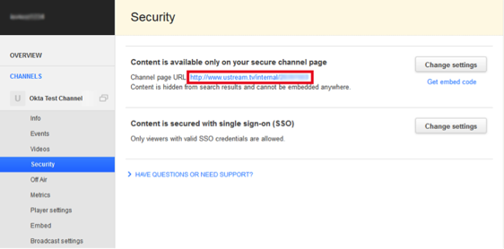

Sign into Ustream Align as an Administrator.
Navigate to ACCOUNT > SSO Settings.
Enter the following information (screen shot at end of step for reference):
Select Identity Provider Initiated SSO.
Entity ID: Copy and paste the following into this field:
Sign into the Okta Admin Dashboard to generate this variable.Certificate: Copy and paste the following into this field:
Sign into the Okta Admin Dashboard to generate this variable.
Login URL: Copy and paste the following into this field:
Sign into the Okta Admin Dashboard to generate this variable.Logout URL: Copy and paste the following into this field:
Sign into the Okta Admin Dashboard to generate this variable.Click Save changes.

Select CHANNELS, then select the following (screen shot at end of step for reference):
Select the channel for which you want SAML to be activated.
Click Security.
Locate the Content is secured with single sign-on (SSO) and click Change settings.

For How do you want to secure your content?, select With single sign-on (SSO), then click Save:

From the Security page, make note of your Channel ID. This is the last part (the digits) of your channel URL, as shown below:

In Okta, select the Sign On tab for the Ustream Align app.
For Default Relay State, enter the Channel ID you saved in step 6.

Click Save.
Done!
Notes:
IdP-initiated flows and SP-initiated flows are supported.
Just In Time (JIT) provisioning is not supported.
For an SP-initiated flow, use the Channel URL, for example:http://www.ustream.tv/internal/123456789:
